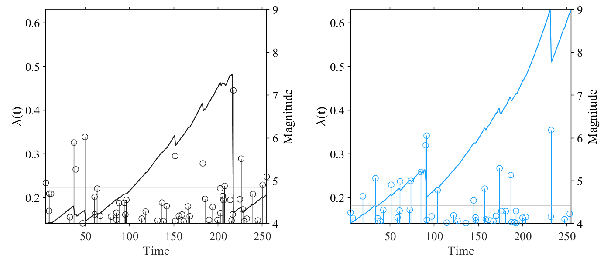
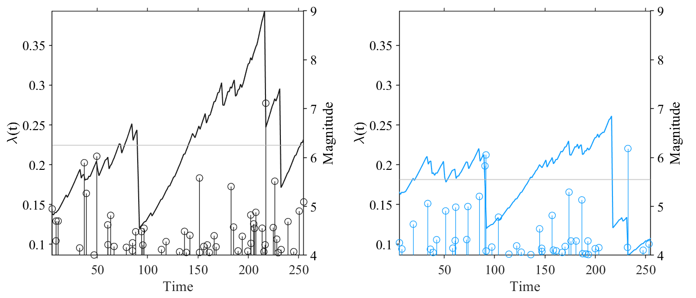
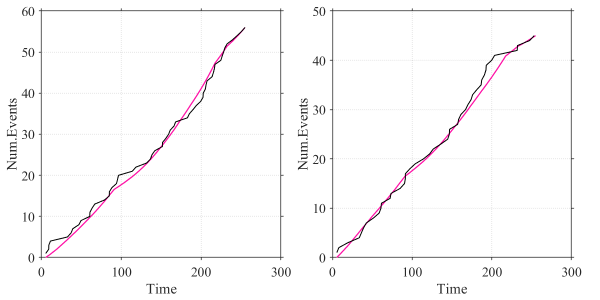
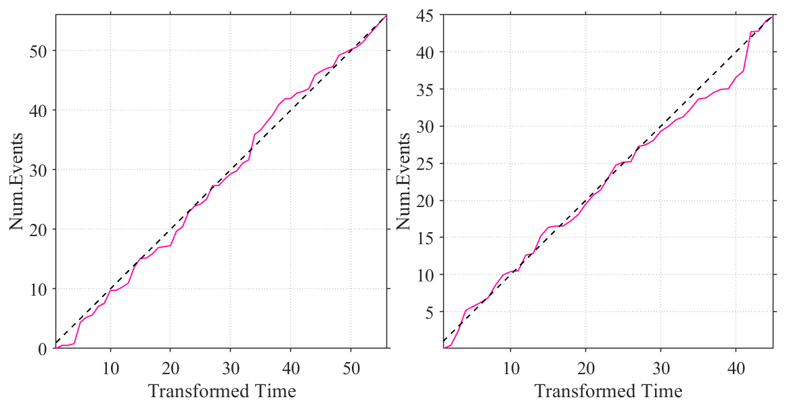

Contents
% ========================================================================= % >> Linked/Coulped Stress Release Model (LSRM) Script % A marked point process in time-stress space with the conditional % intensity function % Modified at: Yu. 2026/03/25 % ========================================================================= % In the univariate stress release model (SRM), the regional stress level % X(t) increases deterministically between two earthquakes and releases % stochastically as a scalar Markov process; % However, LSRM takes into account interactions among different subregions % due to stress transfer, reflected by the parameter θ % ========================================================================= % θij measures the fixed proportion of stress drop from events, initiated in % the subregion j, which is transferred to the subregion i; % In the simpler parameterisation: Cij>0 means damping (j to i) and % Cij<0 means excitation (j to i); Cij=0 means no interaction between them; % and if C=ones(Nregion), it means stress transfer is equal both the region % so that λ1=λ2 % ========================================================================= % Length of params=n^2+2n=n(n+2); Here suppose n=2: global evalNums evalNums=200; Nregion=2; rng(2025); % Data-components: [time,mag,reg,Mmin] time=EventTime; mag=EventMag; reg=randi([1,Nregion],length(time),1); % randomly Mmin=4;
Conditional intensity and Practise
A = [-2;-2];
B = [0.01;0.01];
C=0.5*ones(Nregion);
C(1,2)=-0.0;
C(2,1)=-0.0;
params=LSRM_PackingParam(A,B,C);
% AIC0=LSRM_AIC(time,mag,reg,params,Mmin);
LSRM_PlotResults(LSRM_Estimate(time,mag,reg,params,Mmin),reg,time,mag,Mmin);

MLE-Fitting
[pNew,AICNew]=LSRM_MLE(time,mag,reg,params,Mmin);
First-order Norm of
Iter F-count f(x) Feasibility optimality step
0 9 5.709041e+02 0.000e+00 1.356e+02
1 21 5.564388e+02 0.000e+00 1.106e+04 1.023e+00
2 36 5.500273e+02 0.000e+00 8.574e+02 4.475e-01
3 45 5.438191e+02 0.000e+00 7.851e+02 7.863e-01
4 55 5.422647e+02 0.000e+00 1.054e+03 3.101e-01
5 66 5.401302e+02 0.000e+00 1.708e+03 5.373e-01
6 77 5.399922e+02 0.000e+00 1.827e+03 2.455e-01
7 87 5.367216e+02 0.000e+00 2.939e+03 4.128e-01
8 96 5.359716e+02 0.000e+00 9.765e+02 5.692e-01
9 112 5.356019e+02 0.000e+00 2.450e+02 1.711e-01
10 124 5.355893e+02 0.000e+00 2.743e+02 9.823e-02
11 135 5.351716e+02 0.000e+00 3.764e+02 1.611e-01
12 146 5.342283e+02 0.000e+00 3.987e+02 2.207e-01
13 155 5.338691e+02 0.000e+00 3.442e+02 3.289e-01
14 167 5.337551e+02 0.000e+00 1.366e+02 8.788e-02
15 177 5.336086e+02 0.000e+00 9.392e+01 2.449e-01
16 186 5.334089e+02 0.000e+00 2.361e+02 2.138e-01
17 195 5.333243e+02 0.000e+00 1.575e+02 1.084e-01
18 204 5.332024e+02 0.000e+00 8.705e+01 1.039e-01
19 213 5.330952e+02 0.000e+00 1.786e+02 4.609e-02
20 222 5.330322e+02 0.000e+00 1.181e+02 3.839e-02
21 231 5.329551e+02 0.000e+00 5.452e+01 5.401e-02
22 240 5.329256e+02 0.000e+00 1.982e+01 2.026e-02
23 249 5.329224e+02 0.000e+00 3.077e+00 1.613e-02
24 258 5.329217e+02 0.000e+00 1.500e+00 4.368e-03
25 267 5.329217e+02 0.000e+00 2.341e+00 3.054e-03
26 276 5.329216e+02 0.000e+00 1.319e-01 1.367e-03
27 285 5.329216e+02 0.000e+00 2.346e-01 3.391e-04
28 294 5.329216e+02 0.000e+00 2.164e-01 1.090e-04
29 303 5.329216e+02 0.000e+00 7.104e-02 2.196e-04
30 312 5.329216e+02 0.000e+00 1.532e-02 1.879e-05
First-order Norm of
Iter F-count f(x) Feasibility optimality step
31 321 5.329216e+02 0.000e+00 1.033e-03 1.464e-05
Local minimum possible. Constraints satisfied.
fmincon stopped because the size of the current step is less than
the value of the step size tolerance and constraints are
satisfied to within the value of the constraint tolerance.
# New parameters
列 1 至 7
-2.0623 -1.8634 0.0161 0.0127 0.1388 0.2860 0.7836
列 8
0.8027
Plot-Fitting
LSRM_PlotResults(LSRM_Estimate(time,mag,reg,pNew,Mmin),reg,time,mag,Mmin);
% AIC=LSRM_AIC(time,mag,reg,pNew,Mmin);

RPP-analysis
[CumInt]=LSRM_Integral_Time(time,mag,reg,pNew,Mmin); LSRM_RPP(CumInt,time,reg);

Or like this:
[CumInt]=LSRM_Integral_Region(time,mag,reg,pNew,Mmin); LSRM_RPP_Transformed(CumInt,reg);
